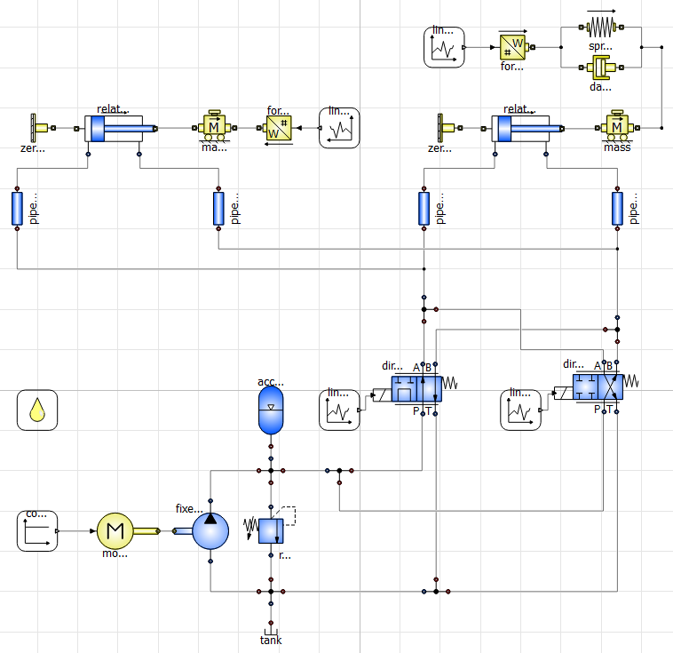
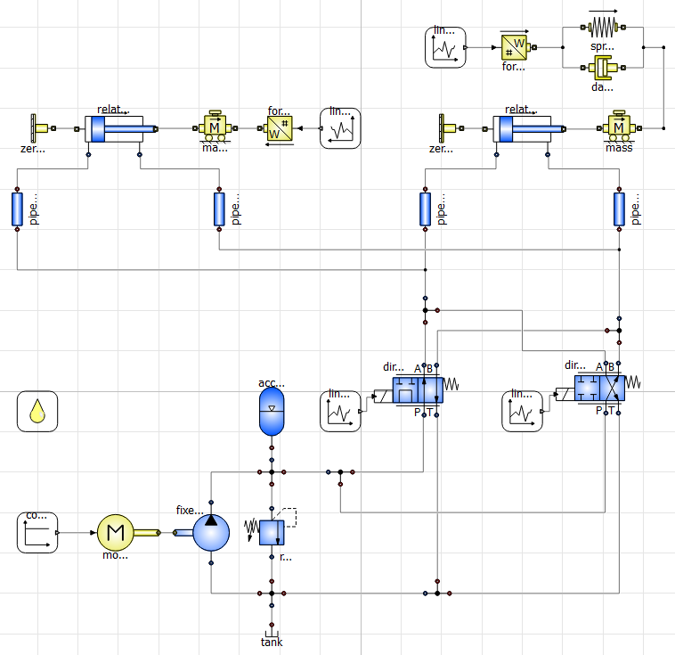

Modeling and Simulation of a MotoGP Holeshot Device Hydraulic System
Problem
MotoGP teams rely on holeshot devices to temporarily lower the chassis during acceleration and braking, reducing wheelie tendency and improving stability. For this project, the challenge was to model the full front and rear hydraulic holeshot system without access to any official technical data.
This meant reconstructing geometry, estimating loads, and simulating the most demanding maneuvers a MotoGP bike faces: a straight-line launch followed by heavy braking, where load transfer on each wheel can nearly double.
Approach
Since the available data was confidential, we gathered information from public sources such as forums, journalist interviews, and high-resolution photos, scaling the bike’s geometry directly from images.
With these inputs, I built a custom multibody model in MATLAB to reproduce the dynamic behavior during the lowering and release phases. The rear suspension required a complete progressive shock model using measurements from a Ducati MotoGP starting setup, while the front could be simplified thanks to its fork-rod geometry.
The simulation was fully interactive, allowing us to inspect joint positions, rod stroke, and forces on each component. Once the dynamic loads were known, we moved to the hydraulic design on OpenModelica, defining pump, lines, actuators, reservoir, and valve behavior under the worst-case conditions.
Solution
The final outcome was a complete and reliable holeshot hydraulic system model capable of predicting how the bike behaves during its most critical demands. The simulation provided accurate force and stroke requirements for each actuator, enabling correct dimensioning of the hydraulic circuit and ensuring the system could withstand loads far beyond typical race conditions.
This work demonstrated how, even with limited data, a combination of physics-based modeling, smart assumptions, and careful reconstruction can lead to a robust engineering solution.

 
